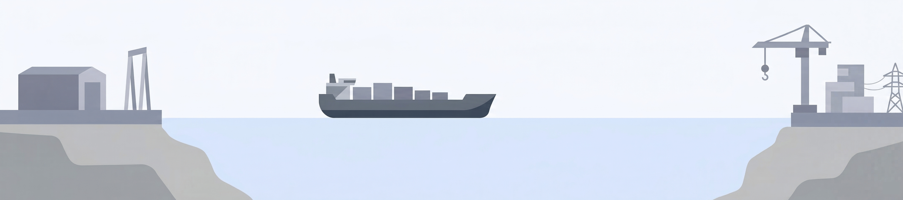

Nuclear's problem
isn't the atom.
It's the construction site.
The Nordic Nuclear Construction (NNC) concept is a framework for building nuclear power plants the way Norway builds offshore platforms — modular, at coastal yards, by an experienced workforce.
Construction,
not fission
Splitting the atom is a well understood process. The physics is reliable, the fuel is extraordinarily energy-dense, and the technology has been mature for decades. What has failed in recent decades is how the plants doing the splitting are designed, contracted, and built.
The "first-of-a-kind" penalty is real: when each nuclear plant is treated as a unique engineering exercise, built stick-by-stick on a greenfield site with an inexperienced workforce and supply chain, costs can spiral and schedules collapse.
Olkiluoto 3 in Finland is the starkest recent example in our region, and provides a lot of learning experiences for what to avoid.
The cause wasn't the reactor. It was a first-of-a-kind EPR design, built on-site from scratch, with a supply chain that had no recent nuclear construction experience. A model the NNC concept is designed to replace.
€12,000/kW doesn't
have to be the baseline
LucidCatalyst's analysis shows that nuclear capital cost is not a fixed number — it is a direct function of how the plant is built. The FOAK penalty is enormous, but it is learnable away.
Moving from stick-built, first-of-a-kind to a shipyard-based construction approach cuts costs by over 80%. With repeat builds and purpose-built facilities, costs can fall even further.
Source: LucidCatalyst (2020), "Missing Link to a Livable Climate: How Hydrogen-Enabled Synthetic Fuels Can Help Deliver the Paris Goals."
€6,000/kW threshold: Hjelmeland et al. (2024), "The role of nuclear energy and baseload demand in capacity expansion planning for low-carbon power systems," Applied Energy.
Scandinavia's nuclear expertise is 40 years old
Finland and Sweden built the bulk of their nuclear fleet in a single wave between 1972 and 1985. Since then, only Olkiluoto 3 has come online.
Grid-connected dates. Lines extend to decommission or present. Source: IAEA PRIS.
Meanwhile, the O&G industry was delivering
While nuclear construction stalled globally, Norway's offshore industry mastered exactly the skills nuclear needs: building massive, safety-critical structures in modules at coastal yards, then moving them precisely into position.
Johan Sverdrup
Europe's largest oil field development in decades. Four major platforms — Processing, Riser, Drilling, and Quarters — each built in modules at separate Norwegian yards, then towed to field and connected. Phase 1 delivered on schedule, within ~10% of budget.
Yggdrasil
Aker BP's next-generation field cluster — one of the largest developments in Norwegian history. Multiple satellite fields tied back to a central processing hub, all built using Norwegian yard infrastructure and the same modular fabrication logic proven on Johan Sverdrup.
Snøhvit LNG
Europe's first LNG export facility. The entire 24,000-tonne process plant was fabricated at yards in Spain and Haugesund, then barged to Melkøya in northern Norway in a single voyage — a landmark demonstration of modular megaproject delivery.
The common thread: yards, modules, vessels
Both projects share the same pattern: large steel structures fabricated in controlled conditions at Norwegian (and international) coastal yards, quality-inspected, loaded onto heavy-lift vessels, and moved to their final position. The crane capacity, deep-water quays, and skilled trade workforce are already in place at the yards, and so is the safety culture built on five decades of high-hazard offshore work.
Same yards.
Same workforce.
New domain.
The Nordic Nuclear Construction concept takes the construction logic of these projects and applies it to nuclear. Plant modules are designed to be built at the coastal yards, using the same heavy-lift infrastructure, and transported to near-shore sites along the wide Nordic coast.
The workforce doesn't need to be rebuilt from scratch, it needs to be requalified for a new regulatory environment. The safety culture is there. The supply chains are in place. What's needed is a construction design fit for purpose and that industry and governments are willing to grasp this opportunity.
Design for fabrication
The nuclear plant is designed from the outset to be built in modules compatible with yard crane capacities, fabrication halls, and deep-water loading quays.
Parallel yard production
Modules can be fabricated in parallel across multiple yards, the same approach used for Johan Sverdrup's four platforms. Factory conditions enable nuclear-grade QA from day one.
Coastal site assembly
Completed modules are transported by vessel to coastal Nordic sites and assembled. Reducing on-site construction as much of the work happens under controlled conditions at the yard.
Learning rate advantage
Repeat builds drive costs down the LucidCatalyst curve — from €12,000 FOAK toward €1,800 LWR Shipyard and beyond. Standardisation, repeat orders, and a workforce that knows the job.
Conventional reactors,
dubbed Large Modular
Reactors (LMR)
The NNC concept is built around proven light-water reactor technology at full scale — not a new or experimental design. We call them Large Modular Reactors because the "modular" refers to how they are built, not how large they are.
The SMR playbook
- view_quilt Modular construction — factory-built, not site-built
- factory High-productivity controlled environment
- timer Reduced construction time through parallel fabrication
The trade-off SMRs accepted: smaller units to enable faster learning, reduced project risk and a non-gigawatt size market — but at the cost of worse economics of scale.
The case for shipyard LMRs
- —Cheaper per MW/MWh at full design capacity
- —Tripling nuclear by 2050 requires massive unit deployments — scale matters
- —Greater output per unit consolidates maintenance and staffing
- —Single large unit vs. multiple small units simplifies grid infrastructure
LMR via NNC captures both advantages: the modular factory-build discipline of SMRs, applied to full-scale reactors, delivers solid learning rates and the superior economics of large units.
A 2025 study evaluating fleet-scale deployment of 200 GWe found that large modular LWRs require roughly half the construction workforce of small modular designs for the same total capacity — approximately 60,000 vs. 117,000 perpetual workers. The study also found that large modular reactors exhibited a higher ratio of offsite to onsite work than SMRs, challenging the assumption that smaller size enables more factory fabrication.
Stewart, Wilkinson & Krellenstein (2025), "Evaluating labor needs for fleet-scale deployments of large vs. small modular light water reactors," Nuclear Engineering and Design, 444, 114377.
Two forces driving cost down
Economics of scale
Larger reactors cost less per installed kW. A unit at 30% of full design capacity costs nearly 60–70% more per kW than one built to full size. NNC targets full-capacity builds.
Economics of learning
Each successive build drives costs down as the workforce, supply chain, and regulator all learn. We believe a 15% learning rate is achievable with repeat NNC builds compared to a 10% for a multi-unit site.
The Nordic Construction Belt
The Nordics coastline hosts some of the world's most capable heavy-industry fabrication facilities — deep-water quays, heavy-lift cranes, and a workforce built on five decades of North Sea megaprojects.
Aibel · Aker Solutions · Westcon · Worley Rosenberg · Trosvik
Vard · Ulstein · Tersan Havyard · Umoe · Saab Kockums · Meyer Turku · Rauma Marine
Westcon: Ølensvåg, Florø, Karmsund, Helgeland
Aker Solutions: Stord, Verdal, Egersund, Sandnessjøen
Vard: Brattvåg, Søvik, Brevik, Tomrefjord
Tersan Havyard: Leirvik i Sogn
Why Modular Nuclear Construction
Proven Approach
Built on success from oil & gas and BWR deployment.
Leverages established infrastructure — yard cranes, halls, and skilled labour — for modular precision from day one.
Higher Quality
Factory-grade precision, weather-protected production.
Applies rigorous QA protocols — FAT, NDT, hydrostatic and dimensional testing — ensuring quality before shipping.
Faster Schedules
Parallel workstreams for accelerated delivery.
Simultaneous yard and site activity reduces total construction time dramatically over stick-built methods.
Rapid Learning
Centralised feedback, continuous improvement.
Lessons from early modules are rapidly transferred to boost efficiency, consistency, and standardisation across the programme.
Easier Integration & Logistics
Build big, move once.
Coastal yards enable direct vessel loading, avoiding oversized road logistics. Fewer, larger modules simplify on-site assembly.
